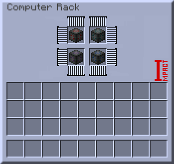
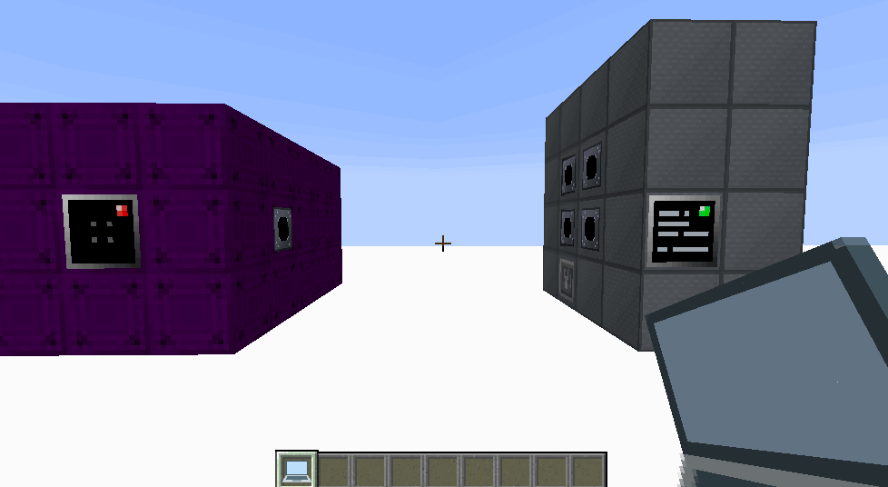
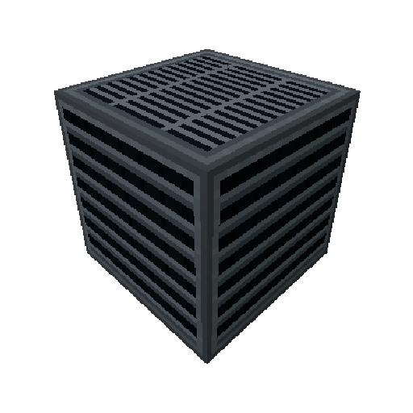

Principle of operation:
After installing the communication tower, it is necessary to tune the frequency with which the tower, computer and machines will worked. Are tuned through the laptop.
There is a Computer Rack to control the points of parallels. The Computer Rack has 4 slots that fit the Parallel CPU. There are 4 types of processors that produce: 4, 16, 64, 256 PP.
Parallel Transmitter is used to transmit parallelism. Parallel Transmitter there are 4
tiers that transmit: 4, 16, 64, 256 PP. When installing the transmitter, the computer
will immediately reserve the required amount of PP for the transmitter to work.
To transfer the PP to the machine you need, you need to install the Parallel Receiver in it.
Next, click on the Parallel Receiver using your laptop and then click on the Parallel
Transmitter on your computer.
If the receiver / transmitter is lit red - there is a connection error or there is no
connection, if it is lit yellow - a successful connection.
Important!
The power consumption of a computer is calculated using the following formula:
Consumption (EU/t) = 8192 + Max PP.
Max PP - the total amount of PP from the Parallel Processors installed in the computer.
Setting the frequency for connecting the Computer to the Communication Tower
Parallel Processors in a Computer Rack
Setting up the transmit of PP from the computer to the machine
Important!
The structure of the computer can change (in length), the maximum length is 16 blocks, the minimum is 2.To enable the hologram (hint when building), use the Multiblock Machine Blueprint from the TecTech mod, click it on the multiblock controller.
Computer Casing
Empty Rack Casing